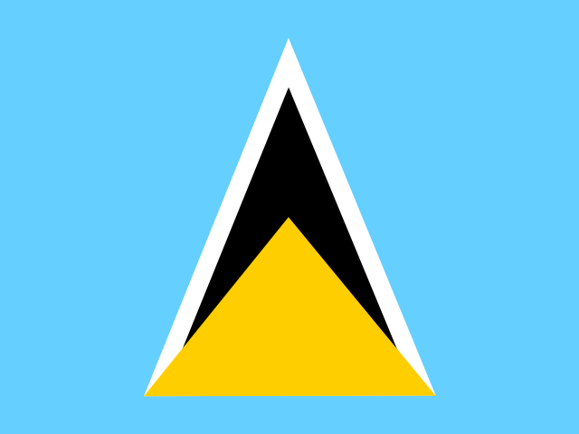

Countries › Africa
Cabo Verde
Where Cabo Verde stands out
▲ MOST
15th Moldova26.48%
Moldova26.48%
16thCabo Verde25.94%
17th North Macedonia25.92%
North Macedonia25.92%
16th of 193 · United Nations Department of Economic and Social Affairs (UN DESA) International Migrant Stock 2024, 2020
▲ MOST
17th

Saint Lucia259,01618thCabo Verde239,454
19th Barbados225,581
Barbados225,581
18th of 192 · Central Intelligence Agency (CIA) World Factbook and World Bank (derived), 2024
▲ MOST
17th Argentina21.37%
Argentina21.37%
18thCabo Verde20.95%
19th Venezuela20.94%
Venezuela20.94%
18th of 186 · United States Energy Information Administration, 2024
▲ MOST
19th Kenya16.4%
Kenya16.4%
20thCabo Verde15.3%
21st Poland15.1%
Poland15.1%
20th of 185 · United States Energy Information Administration, 2024
Size, sea and borders
4,030 km²166th of 195
965 kilometres (km)75th of 193
Coastline for its sizeCIA World Factbook and World Bank (derived), 2024 · web.archive.org (cia.gov)
239,454 m per 1,000 km²18th of 192
Number of land bordersGeoNames, 2026-08 · download.geonames.org
0158th of 195, tied with 37
Land and height
2,829 m77th of 194
11.9% of land148th of 192
Open grass and tundraEuropean Space Agency (ESA) WorldCover 2021, via Food and Agriculture Organization statistical database (FAOSTAT), 2021 · bulks-faostat.fao.org
38.2% of the country26th of 194
Desert and bare rockESA WorldCover 2021, via FAOSTAT, 2021 · bulks-faostat.fao.org
44.1% of land29th of 194
People
522,331 people168th of 195
Population densityWorld Bank, WDI, 2023 · data.worldbank.org
130 people per km²68th of 192
27.9 years109th of 195
76.1 years75th of 195
Share of its people living abroadUN DESA International Migrant Stock 2024, 2020 · un.org
25.9%16th of 193
Food, power and travel
Natural resource incomeWorld Bank, WDI, 2021 · data.worldbank.org
17.7% of gross domestic product (GDP)28th of 183
Young people out of workInternational Labour Organization (ILO), via World Bank, WDI, 2021 · data.worldbank.org
31.7%27th of 179
55.1 kilograms (kg) per person a year23rd of 168
Electricity lost before billingUnited States Energy Information Administration, 2024 · eia.gov
20.9%18th of 186
Electricity it generates from windUnited States Energy Information Administration, 2024 · eia.gov
15.3%20th of 185
10149th of 189, tied with 4
Football and chess
Football internationals played, all timeInternational football results (martj42), 2026 · github.com
239147th of 193
See all 129 facts about Cabo Verde
Showing 20 highlights for Cabo Verde. Rank counts from the highest value among the countries that have data: 1st is the most. Ties share a rank. Data version 91, 22 November 2026.
Sort Cabo Verde against four others
The game has figures for Cabo Verde on 172 of its 190 questions.
The same game for Android and iOS. It launches on 10 December 2026.
Out now.